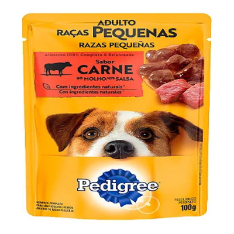

Sachê Sabor Carne ao Molho para Cães Adultos
Imagem do produto Sachê Sabor Carne ao Molho para Cães Adultos
Descrição: O Sachê Sabor Carne ao Molho para Cães Adultos é uma refeição úmida saborosa e nutritiva, feita com ingredientes naturais e carnes selecionadas. Ideal para complementar a ração seca e garantir mais sabor e hidratação para o seu pet.
Indicação: Cães adultos de pequeno e médio porte.
Sabor: Carne
Peso líquido: 100 g
Preço: R$ 5,90 (unidade)
Benefícios
• Rico em proteínas e vitaminas essenciais
• Ajuda na hidratação do pet
• Textura macia e sabor irresistível
• Sem corantes ou conservantes artificiais
← Voltar para os produtos